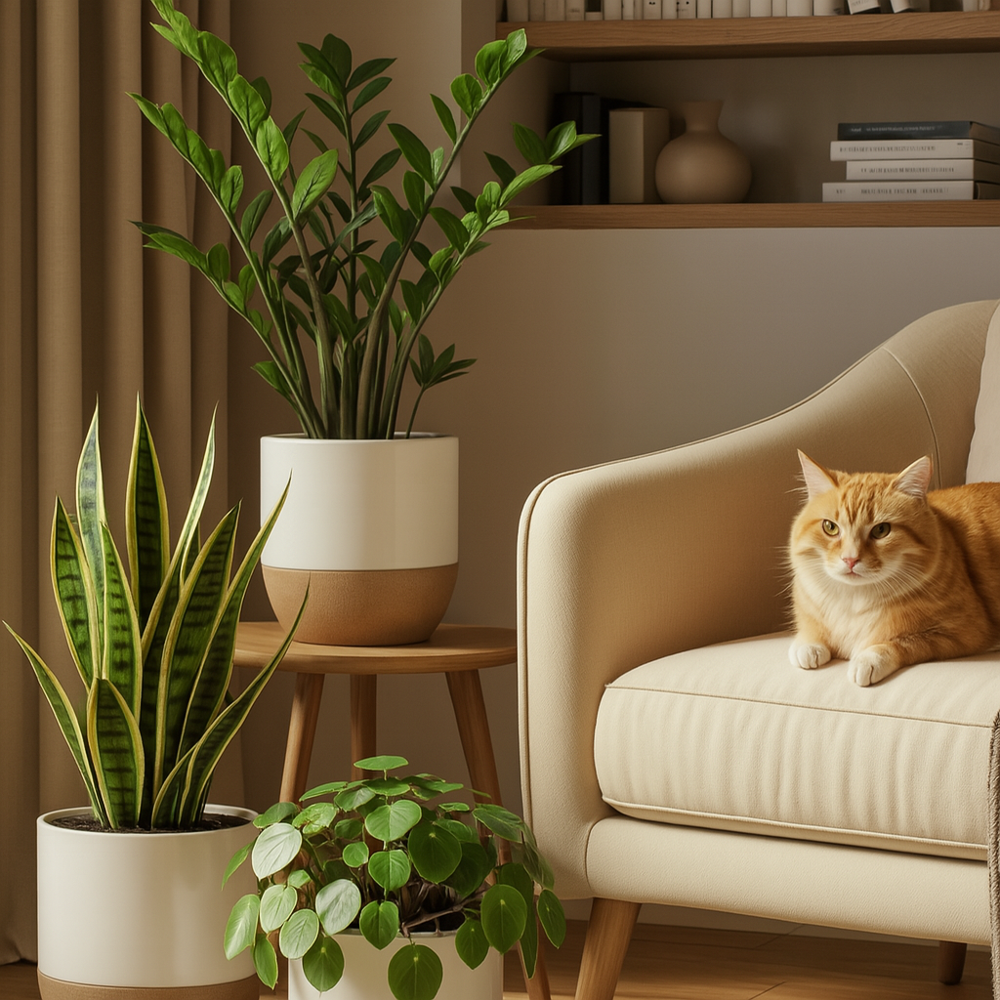

Plantas que seu gato vai ignorar (e sua casa vai agradecer)

Se você ama plantas, mas convive com um felino curioso que adora mastigar folhas, derrubar vasos ou cavar a terra, sabe o quanto pode ser frustrante montar um cantinho verde em casa. A boa notícia? Nem todas as plantas atraem os gatos — algumas parecem ser completamente ignoradas por eles.
Essa “indiferença botânica” não é aleatória. Muitos gatos evitam plantas que não oferecem estímulos sensoriais, como aroma, movimento ou textura agradável ao toque. Folhas rígidas, cerosas, pontiagudas ou que não balançam com facilidade tendem a passar despercebidas pelos felinos. Isso cria uma ótima oportunidade para decorar com mais tranquilidade, sem transformar o lar em um campo de batalha entre garras e folhas.
A seguir, veja uma seleção de espécies que combinam beleza, resistência e baixa atratividade para gatos. Algumas são seguras, outras exigem posicionamento estratégico, mas todas têm uma coisa em comum: são geralmente ignoradas por bichanos.
- Zamioculca (Zamioculcas zamiifolia) – Visual moderno, folhas brilhantes e espessas. Apesar de tóxica, costuma ser totalmente ignorada pelos gatos. Posicione em local inacessível para maior segurança.
- Aspidistra (Aspidistra elatior) – Conhecida como “planta de ferro”, é resistente e discreta. Suas folhas grandes e imóveis não despertam curiosidade felina. Além disso, é segura para gatos.
- Palmeira Ráfis (Rhapis excelsa) – Suave e elegante, essa palmeira traz um toque tropical ao ambiente. É segura e raramente atrai gatos, por ter folhas firmes e pouco convidativas ao toque.
- Peperômia-argyreia (Peperomia argyreia) – Com padrão que lembra uma melancia, essa peperômia é pequena, robusta e segura. Gatos tendem a ignorá-la por completo.
- Cactos pequenos – Espécies como cacto-ouriço ou cacto amendoim têm espinhos que naturalmente desestimulam o toque. Apesar da estética rústica, atenção: nem todos os cactos são atóxicos.
- Pacová (Philodendron martianum) – Suas folhas grossas e arredondadas têm textura cerosa e firme. Por ser tóxica, o ideal é mantê-la fora do alcance, embora raramente chame atenção felina.
É importante lembrar que cada gato é único. O que funciona para a maioria pode não funcionar para todos. Sempre observe o comportamento do seu bichano diante de novas plantas e mantenha vasos estáveis, especialmente em superfícies altas ou próximas a locais de descanso do animal.
Mesmo com plantas que costumam ser ignoradas, o cuidado e a atenção continuam sendo essenciais para manter a convivência segura e harmoniosa. Posicione os vasos longe de fontes de água, pias e áreas de escavação instintiva.
💡 Quer transformar sua casa em um espaço verde e pet-friendly de verdade? Navegue por nossos outros posts, descubra espécies ideais para cada ambiente e aprenda truques de ambientação que agradam tanto a humanos quanto aos felinos.
Confira também o carrossel visual no nosso Instagram com essas plantas e mais dicas práticas: 👉 @plantasngatos
← Voltar para o blog